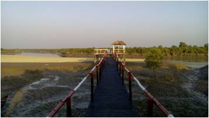

কারাম মুড়া ম্যানগ্রোভ ভিলেজের পাশেই অবস্তিত এই পাখি পর্যবেক্ষন কেন্দ্রটি। আদিবাসী মুন্ডা সম্প্রদায়ের ব্যবস্থাপনায় রিলিফ ইন্টারন্যাশনাল ইউরোপিয়ান ইউনিয়নের সহযোগিতায় এই কেন্দ্রটি নির্মাণ করেছে।
এই টাওয়ারটিতে দাঁরিয়ে পর্যটকরা সারা বছর পাখি পর্যবেক্ষন করতে পাওে, বিশেষ করে শীতের সময় যখন অতিথি পাখি আগমন করে তখন এই কেন্দ্রটি পাখির কলতানে মুখরিত হয়ে ওঠে।
এই কেন্দ্রে পাশেই দুটি মুন্ডা বাড়িতে পর্যটকদের আবাসনের জন্য রয়েছে ইকো কটেজ। এটি আদিবাসী মুন্ডা সম্প্রদায় কেন্দ্রিক সুন্দ্ররবন ভ্রমনে একটি অন্যতম ইকো-পর্যটন কেন্দ্র।